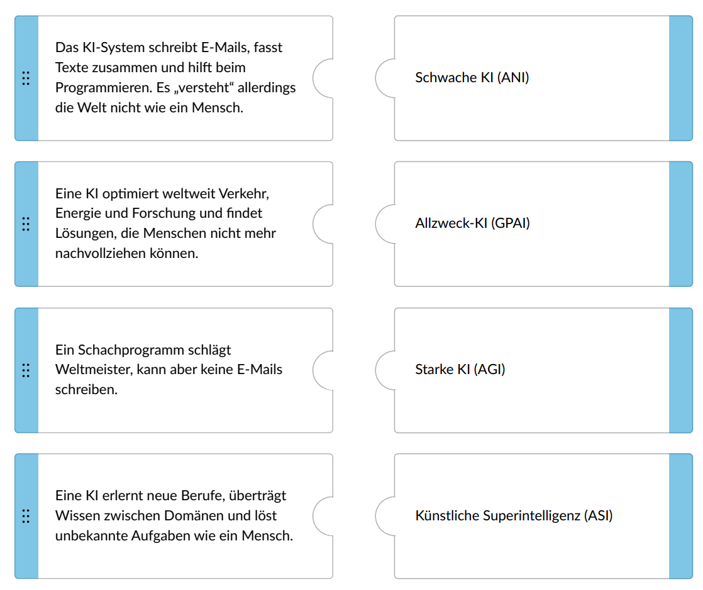
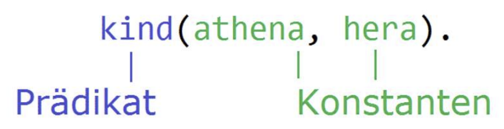
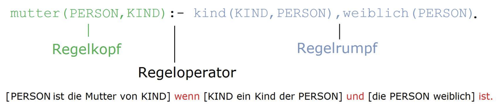
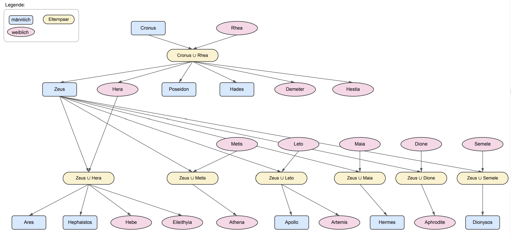
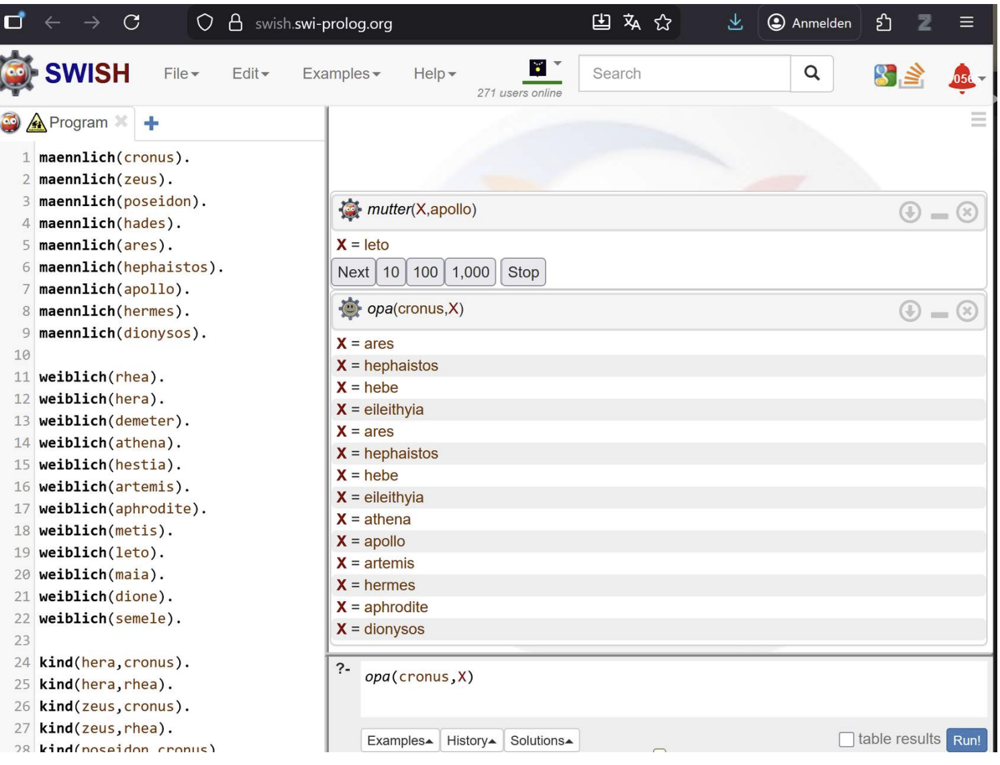

KI klingt oft wie ein einzelnes Ding. In Wirklichkeit begegnet dir ein ganzes Bündel aus Perspektiven, technischen Ansätzen und gesellschaftlichen Erwartungen. Auf dieser Seite untersuchst du, wie man KI-Systeme sinnvoll abgrenzen kann.
Lies jeweils einen kurzen Abschnitt, bearbeite die Aufgabe direkt darunter und nutze am Ende die Ergebnisseite. Du brauchst kein Vorwissen über KI, aber du solltest logisch genau lesen.
Viele neue KI-Anwendungen werden als revolutionär, menschenähnlich oder als grundlegender Umbruch beschrieben. Medienberichte und Marketing betonen häufig scheinbar grenzenlose Fähigkeiten.
Der KI-Effekt beschreibt eine Gegenbewegung: Sobald ein System alltäglich, erklärlich oder technisch gut verstanden ist, wird es oft nicht mehr als KI wahrgenommen. Taschenrechner, Handschrifterkennung, regelbasierte Chatbots oder klassische Schachprogramme wirken heute weniger geheimnisvoll als früher.
KI ist ein bewegliches Ziel: Was gestern noch als KI galt, kann morgen als normale Informatik erscheinen. Larry Tesler wird der Satz zugeschrieben: „AI is whatever hasn't been done yet.“
Jetzt hast du gelernt, dass KI nicht nur eine technische, sondern auch eine sprachliche und gesellschaftliche Kategorie ist.
In Grundlagenvorlesungen und Lehrbüchern wird KI häufig als Simulation von Intelligenz betrachtet. Russell und Norvig ordnen Definitionen in vier Perspektiven ein: menschliches Denken, menschliches Handeln, rationales Denken und rationales Handeln.
Hier fragt man, ob ein System innere Denkprozesse des Menschen nachbildet. Das ist wichtig für Kognitionswissenschaft und Philosophie.
Hier zählt, ob ein System sich nach außen menschenähnlich verhält. Der Turing-Test gehört in diese Perspektive.
Hier geht es um logisches Schließen: Sind Entscheidungen aus Wissen und Regeln nachvollziehbar ableitbar?
Hier zählt zweckmäßiges Verhalten: Erreicht das System unter gegebenen Bedingungen möglichst gut seine Ziele?
Alan Turing schlug 1950 das imitation game vor: Ein menschlicher Interviewer stellt schriftliche Fragen und soll nicht erkennen können, ob die Antworten von einem Menschen oder einer Maschine stammen. Moderne Chatbots können in solchen Situationen überzeugend wirken.
Aber: Der Test prüft vor allem menschenähnliches Auftreten. Er beantwortet nicht sicher, ob ein System versteht, bewusst ist oder verantwortungsvoll handelt.
Jetzt hast du gelernt, dass unterschiedliche KI-Definitionen oft deshalb kollidieren, weil sie verschiedene Perspektiven verwenden.
Für informatische Zwecke ist es oft hilfreicher, von einem KI-System statt von der KI zu sprechen. Dann geht es um maschinengestützte Systeme, die aus Eingaben für bestimmte Ziele Ausgaben wie Vorhersagen, Inhalte, Empfehlungen oder Entscheidungen ableiten.
Eine mögliche Arbeitsdefinition für diesen Kurs lautet: KI-Systeme sind Informatiksysteme, die eigenständig geeignete Verfahren oder Modelle zur Lösung von Problemen oder zur Zielerreichung ermitteln.
Ein KI-System muss nicht menschlich denken. Es zeigt ein im Sinne der Entwicklerinnen und Entwickler zweckmäßiges Verhalten. Ob es die Welt versteht, ist damit noch nicht geklärt.
| Typ | Grundidee | Status im Kurs |
|---|---|---|
| Schwache KI (ANI) | Spezialisiert auf ein enges Aufgabengebiet, zum Beispiel Schach, Gesichtserkennung oder Spamfilter. | Sehr verbreitet. |
| Allzweck-KI (GPAI) | Vielseitig einsetzbar, zum Beispiel für Übersetzen, Zusammenfassen, Programmieren oder Generieren von Inhalten. | Aktuell praktisch wichtig. |
| Starke KI (AGI) | Soll unbekannte Aufgaben mindestens auf menschlichem Niveau lösen und Wissen flexibel übertragen. | Forschungsziel, kein allgemein anerkannt erreichtes System. |
| Künstliche Superintelligenz (ASI) | Würde menschliche kognitive Fähigkeiten deutlich übertreffen. | Hypothetisches Konzept. |

Jetzt hast du gelernt, dass KI-Systeme nicht menschlich sein müssen und dass Breite der Einsetzbarkeit nicht dasselbe ist wie echtes Verstehen.
Ein Problem liegt vor, wenn ein Ziel erreicht werden soll, der Lösungsweg aber nicht direkt klar ist. In der Informatik interessiert uns besonders, ob eine Berechnungsvorschrift von einer Eingabe zu einer gewünschten Ausgabe führt.
Menschen schreiben Schritt für Schritt, wie die Eingabe verarbeitet wird. Beispiel: Taschenrechner oder klassischer Sortieralgorithmus.
Fakten und Regeln werden formalisiert. Das System sucht regelbasiert nach einer passenden Antwort.
Ein Lernalgorithmus erzeugt oder verbessert ein Modell aus Trainingsdaten und Feedback.
Jetzt hast du gelernt, dass nicht jede nützliche Software KI ist und dass KI-Methoden auf unterschiedliche Weise Problemlösungen erzeugen.
Bei klassischer Software erwarten wir oft Korrektheit, Nachvollziehbarkeit und Transparenz. Maschinelles Lernen ist anders: Modelle können Fehler machen, halluzinieren oder schwer erklärbar sein. Trotzdem wird ML eingesetzt, wenn handgeschriebene Regeln unpraktisch, zu teuer oder zu starr wären.
Ärztinnen erkennen Muster in Bildern, die sich nicht leicht als Wenn-Dann-Regeln schreiben lassen.
Eine Katze lässt sich nicht einfach durch ein paar feste Pixelregeln definieren.
Spam-Muster ändern sich. ML kann mit neuen Beispielen aktualisiert werden.
Systeme wie AlphaFold können wissenschaftliche Hypothesen und neue Erkenntnisse unterstützen.
Generative Systeme können ungewöhnliche Varianten erzeugen, die als Inspiration dienen.
Fehlerfreiheit, Erklärbarkeit und Sicherheit müssen je nach Einsatz besonders geprüft werden.
Wissensbasierte KI wird auch symbolische, klassische, logikbasierte oder regelbasierte KI genannt. In den 1970er bis 1990er Jahren war sie ein zentraler Ansatz. Ihr Vorteil: Wissen liegt explizit vor, und Antworten lassen sich logisch nachvollziehen.
In Prolog beschreibst du Wissen deklarativ: Du sagst, was gilt, statt einen genauen Ablauf zu programmieren. Zwei Bausteine sind wichtig.


maennlich(zeus). weiblich(leto). kind(apollo, zeus). kind(apollo, leto). mutter(PERSON, KIND) :- kind(KIND, PERSON), weiblich(PERSON). vater(PERSON, KIND) :- kind(KIND, PERSON), maennlich(PERSON).
Jetzt hast du gelernt, dass eine wissensbasierte KI nicht nur Daten abruft, sondern aus Fakten und Regeln neue Aussagen ableiten kann.
Die olympische Götterfamilie eignet sich als überschaubarer Wissensbereich. Du kannst Personen als Konstanten und Verwandtschaften als Fakten und Regeln abbilden.

Eine browserbasierte Prolog-Umgebung findest du unter swish.swi-prolog.org. Dort kannst du ein Programm anlegen und rechts unten Anfragen ausführen.

mutter(X, apollo) liefert X = leto, wenn die passenden Fakten und Regeln vorhanden sind.Wissensbasierte KI ist nachvollziehbar, stößt aber an Grenzen: Viele reale Situationen enthalten implizites Wissen, Sonderfälle und unwichtige Details. Wenn man die Welt zu vollständig abbilden will, wird es schwer, zur richtigen Zeit das Wesentliche zu finden. Dieses Problem wird häufig mit dem Frame-Problem verbunden.
Maschinelles Lernen umgeht manche Modellierungsarbeit, bringt aber neue Risiken mit sich: statistische Fehler, schwer erklärbare Entscheidungen, Datenabhängigkeit und mögliche Verzerrungen.
Diese Seite paraphrasiert den bereitgestellten Unterrichtstext und stützt zentrale Definitionen und Beispiele zusätzlich auf die folgenden Quellen.
Weiter zu Teil 2: Maschinelles Lernen, Trainingsdaten und Modellbewertung